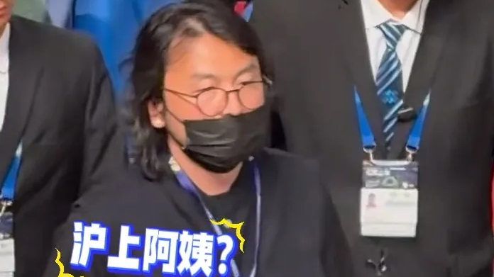

近日，网友在网球赛场偶遇雷佳音。其身穿随性黑衣，戴黑框眼镜、穿拖鞋，一头长发乱糟糟，状态十分松弛。不少人第一眼未能认出，玩梗称其像"沪上阿姨"。
也有粉丝表示，私下观赛怎么舒服怎么来，无需端着明星架子。一张毫无"营业感"的抓拍，反而让不少人觉得亲切。
不修边幅，却圈了一波好感。
所以真正圈粉的，不是精致，是那点不加滤镜的真实。
表层看，这是一次反差萌；但更深一层，是公众对"人设紧绷"的审美疲劳。当太多明星的公开形象被精修、被脚本、被营业，一张随性的抓拍反而成了稀缺品。
雷佳音的松弛，戳中的正是这种情绪：观众想看的，是一个会累、会懒、会不修边幅的"活人"，而不是永远在线的完美标本。
真实，比精致更难演。
观众要的，是活人，不是标本。
从文娱生态看，艺人私下状态被围观是一把双刃剑：适度的真实有助于拉近与观众的距离，但过度的窥探与放大，也会越过隐私的边界。
对明星而言，最好的"营业"，或许是允许自己偶尔"不营业"——在不属于舞台的时刻，做一个普通观众。对公众来说，多一点善意的距离，也是对这份松弛的成全。
分寸之间，皆是体面。
最好的营业，是允许自己偶尔"不营业"。
回到赛场边那身拖鞋与乱发：他只是想安静看场球，却意外让人记住了"真实"的样子。
雷佳音这身"接地气"，给被过度包装的娱乐圈提了个醒——观众并不时刻需要完美，偶尔的真实反而更珍贵。愿每个在镜头外的人，都能被允许松弛地做自己；也愿我们在围观时，多留一分不打扰的温柔。